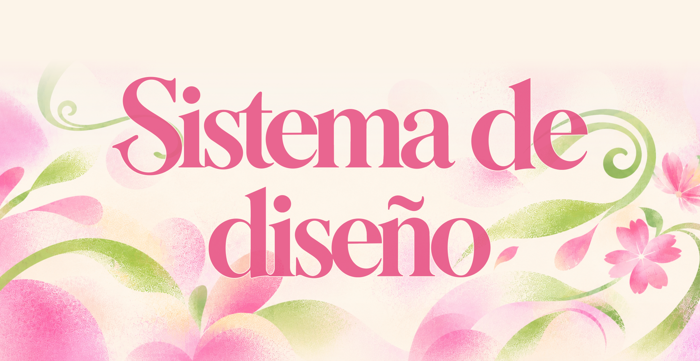
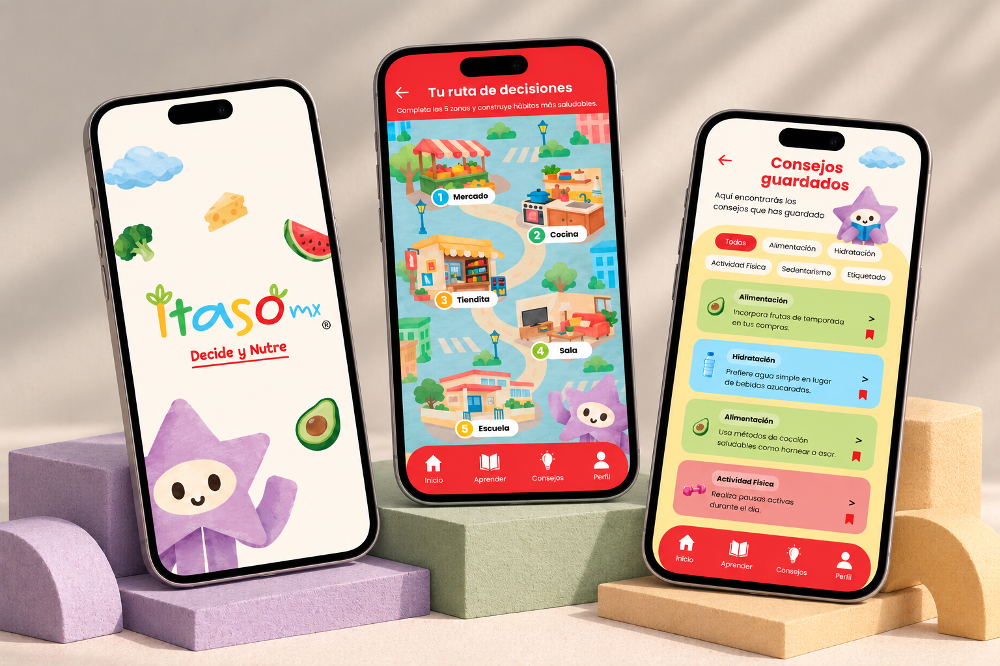
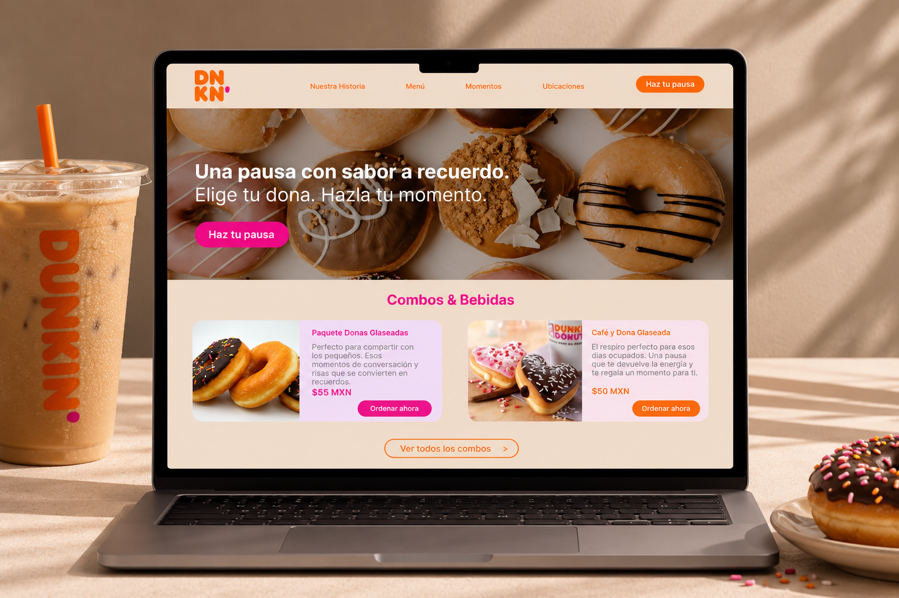

Sin elevación
--shadow-noneSuperficie plana que mantiene los elementos integrados al fondo.
Elementos en reposo
Mi sistema de diseño reúne los elementos visuales que dan identidad y coherencia a este portafolio. A través del color, la tipografía, las formas y la composición, construyo un lenguaje gráfico que combina expresión, funcionalidad y experimentación.
Cada elemento tiene un propósito: crear una experiencia visual dinámica, mantener la claridad de la información y reflejar mi estilo como diseñadora.
El rosa y el verde lima son los colores principales de mi identidad visual. Su combinación aporta energía, contraste y personalidad, mientras que los tonos suaves y neutros equilibran la composición.
Cada color cumple una función dentro del sistema, desde destacar elementos interactivos hasta organizar la información y crear espacios de descanso visual.
Clic en un color para copiar su código.
La tipografía es una parte esencial de mi identidad visual. La combinación de Camiro, Bricolage Grotesque y Questrial permite crear una jerarquía clara, equilibrando expresividad y legibilidad.
Cada tipografía cumple una función específica: Camiro aporta carácter a las composiciones, Bricolage Grotesque da fuerza a los títulos y Questrial facilita la lectura de los contenidos.
Cada proyecto es una oportunidad para explorar nuevas ideas y encontrar diferentes formas de comunicar. A través del diseño, busco crear propuestas visuales que combinen creatividad, claridad y funcionalidad, cuidando tanto los detalles como la experiencia de quien interactúa con ellas.
El espaciado y la composición permiten organizar los elementos de manera clara y equilibrada. Mi sistema parte de una escala de 8 px que mantiene la consistencia entre secciones, componentes y contenidos.
La distribución utiliza márgenes amplios y una retícula flexible que aporta orden sin limitar la libertad visual de cada composición.
La profundidad aporta dimensión y jerarquía a los elementos de mi portafolio. A través de sombras sutiles, elevaciones y pequeños movimientos, las superficies adquieren presencia sin perder la ligereza visual.
Cada nivel tiene una función específica: diferenciar elementos, destacar interacciones y guiar la atención de manera natural.
--shadow-noneSuperficie plana que mantiene los elementos integrados al fondo.
Elementos en reposo--shadow-subtleAporta una separación ligera entre los elementos y el fondo.
Imágenes y tarjetas destacadas--shadow-liftDestaca los elementos cuando el usuario interactúa con ellos.
Hover en tarjetas--shadow-floatCrea un nivel superior para destacar contenido sobre otras superficies.
Elementos superpuestos o modalesLas formas y los bordes redondeados aportan continuidad y personalidad a mi sistema visual. A través de diferentes niveles de curvatura, los elementos mantienen una apariencia cercana, flexible y coherente.
Las superficies geométricas conviven con formas orgánicas y degradados difusos, creando un equilibrio entre estructura y expresión visual.
Inputs y elementos pequeños
Contenedores
Tarjetas destacadas
Superficies principales y modales
Botones, etiquetas y navegación tipo cápsula
Los bordes redondeados suavizan la composición y permiten organizar el contenido sin perder claridad visual.
Los degradados difusos aportan movimiento y expresión visual, rompiendo la rigidez de la composición sin interferir con el contenido.
Las flores, hojas y formas orgánicas aportan movimiento, personalidad y expresión visual a mi identidad. Se utilizan como elementos decorativos para acompañar el contenido, crear composiciones más dinámicas y conectar las distintas secciones del portafolio.
Los componentes son los elementos que permiten interactuar con mi portafolio. Cada botón, tarjeta y campo de texto mantiene un lenguaje visual consistente, combinando formas suaves, colores contrastantes y respuestas intuitivas.
Su diseño busca facilitar la navegación, destacar el contenido y crear una experiencia clara, dinámica y accesible.
Los botones permiten identificar acciones y navegar entre secciones mediante diferentes niveles de énfasis visual.
Demostraciones visuales: permiten observar estados reales (hover, focus, activo) sin ejecutar acciones.
Presenta una vista previa del proyecto y permite acceder a su contenido de manera directa.

Utiliza movimientos y transiciones sutiles para destacar el contenido durante la exploración.

Un espacio para compartir ideas, propuestas o comenzar una conversación.
Cada componente se revisa en sus estados default, hover, focus, active y disabled.
La composición se reordena; no se limita a reducir la versión de escritorio. Los proyectos pasan principalmente a una columna y las imágenes conservan protagonismo. Toda interacción basada en hover debe tener una alternativa clara mediante toque. Los márgenes se reducen, pero nunca desaparecen; el contenido no debe tocar los bordes de la pantalla.
Espacio amplio y redondeado, sin salir de la página. También: hola@valeriarojas.design